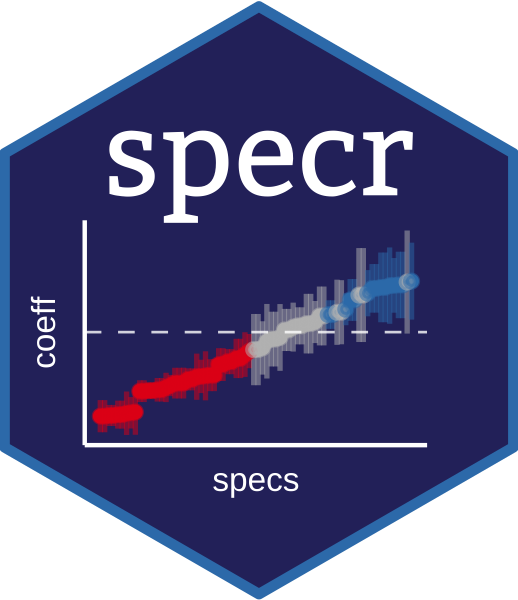
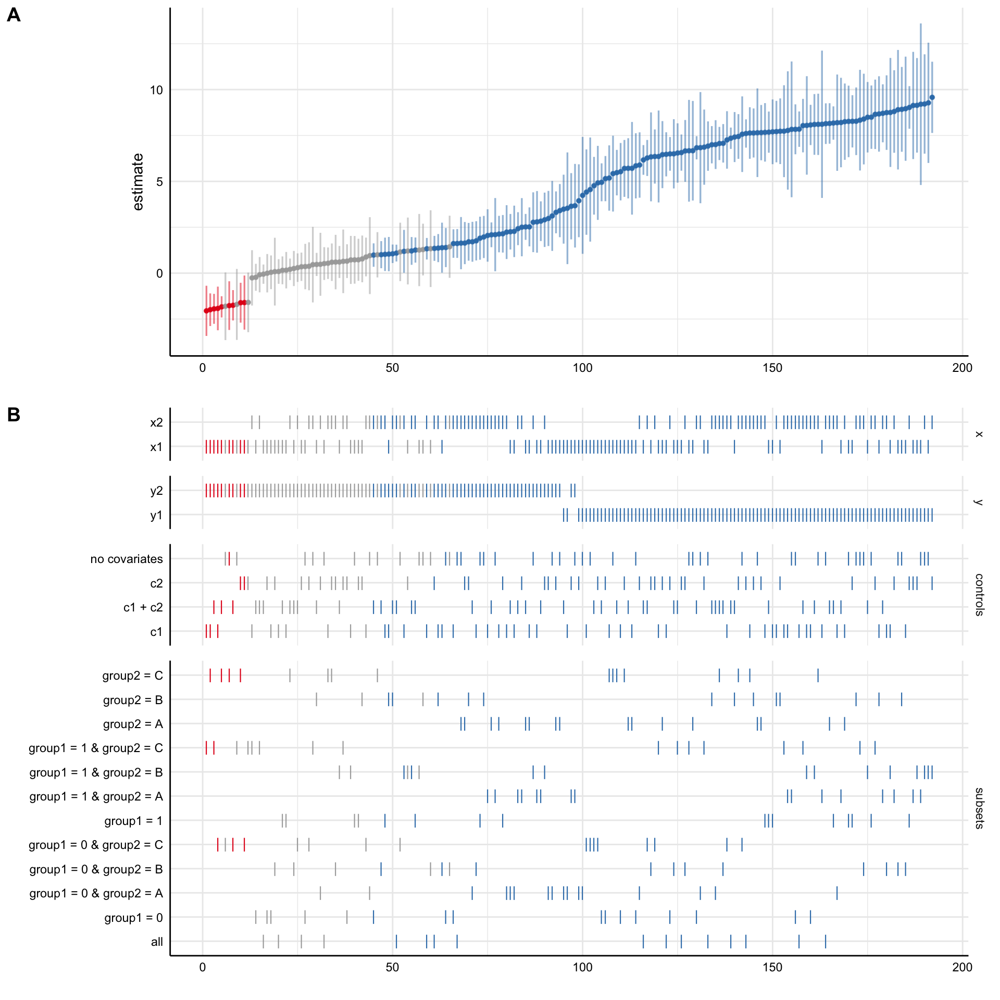

Conducting and Visualizing Specification Curve Analyses
News
20 January 2022: specr version 1.0.0 is now available via CRAN. This is a major update with several new features and functions. Note: it introduces a new framework for conduction specification curve analyses compared to earlier versions (see version history for more details).
4 December 2020: specr development version 0.2.2 is available via github. Mostly minor updates and bug fixes.
25 May 2020: specr version 0.2.1 has been released on CRAN.
What is specr?
The goal of specr is to facilitate specification curve analyses (Simonsohn, Simmons & Nelson, 2020; also known as multiverse analyses, see Steegen, Tuerlinckx, Gelman & Vanpaemel, 2016). The package can be used to investigate how different (theoretically plausible) analytical choices affect outcome statistics within the universe of one single data set. It provides functions to setup, run, evaluate, and plot the multiverse of specifications. A simple example of how to use specr is provided below. For more information about the various functions and specific vignettes and use cases, visit the documentation.
Disclaimer
We do see a lot of value in investigating how analytical choices affect a statistical outcome of interest. However, we strongly caution against using specr as a tool to somehow arrive at a better estimate. Running a specification curve analysis does not make your findings any more reliable, valid or generalizable than a single analysis. The method is only meant to inform about the effects of analytical choices on results, and not a better way to estimate a correlation or effect.
Installation
Install specr from CRAN:
install.packages("specr") Or install the most recent development version from GitHub with:
# install.packages("devtools")
devtools::install_github("masurp/specr") Usage
Using specr is comparatively simple. The two main function are setup(), in which analytic choices are specified as arguments, and specr(), which fits the models across all specifications. The latter creates a class called “specr.object”, which can be summarized and plotted with generic function such as summary or plot.
# Load package ----
library(specr)
# Setup Specifications ----
specs <- setup(data = example_data,
y = c("y1", "y2"),
x = c("x1", "x2"),
model = c("lm"),
controls = c("c1", "c2"),
subsets = list(group1 = unique(example_data$group1),
group2 = unique(example_data$group2)))
# Run Specification Curve Analysis ----
results <- specr(specs)
# Plot Specification Curve ----
plot(results)
How to cite this package
citation("specr")
#>
#> To cite 'specr' in publications use:
#>
#> Masur, Philipp K. & Scharkow, M. (2020). specr: Conducting and
#> Visualizing Specification Curve Analyses. Available from
#> https://CRAN.R-project.org/package=specr.
#>
#> A BibTeX entry for LaTeX users is
#>
#> @Misc{,
#> title = {specr: Conducting and Visualizing Specification Curve Analyses (Version 1.0.1)},
#> author = {Philipp K. Masur and Michael Scharkow},
#> year = {2020},
#> url = {https://CRAN.R-project.org/package=specr},
#> }References
Simonsohn, U., Simmons, J.P. & Nelson, L.D. (2020). Specification curve analysis. Nature Human Behaviour, 4, 1208–1214. https://doi.org/10.1038/s41562-020-0912-z
Steegen, S., Tuerlinckx, F., Gelman, A., & Vanpaemel, W. (2016). Increasing Transparency Through a Multiverse Analysis. Perspectives on Psychological Science, 11(5), 702-712. https://doi.org/10.1177/1745691616658637
Other resources on multiverse/specification curve analyses
The following papers and websites are interesting resources to explore the method further and learn about potential promises and pitfalls:
Good discussion of the multiverse analysis method: Del Giudice, M., & Gangestad, S. W. (2021). A traveler’s guide to the multiverse: Promises, pitfalls, and a framework for the evaluation of analytic decisions. Advances in Methods and Practices in Psychological Science, 4(1). https://journals.sagepub.com/doi/abs/10.1177/2515245920954925
A systematic comparison of visualization techniques for multiverse analyses: Hall, B. D., Liu, Y., Jansen, Y., Dragicevic, P., Chevalier, F., & Kay, M. (2022,). A survey of tasks and visualizations in multiverse analysis reports. In Computer Graphics Forum (Vol. 41, No. 1, pp. 402-426).https://onlinelibrary.wiley.com/doi/abs/10.1111/cgf.14443
Proposal to include data collection decisions as choices within the multiverse: Harder, J. A. (2020). The multiverse of methods: Extending the multiverse analysis to address data-collection decisions. Perspectives on Psychological Science, 15(5), 1158-1177. https://journals.sagepub.com/doi/abs/10.1177/1745691620917678
Proposal on how the multiverse approach can be implemented in student research projects: Heyman, T., & Vanpaemel, W. (2022). Multiverse analyses in the classroom. Meta-Psychology, 6. https://open.lnu.se/index.php/metapsychology/article/view/2718
Overview of different packages for specification curve/multiverse analysis: https://urisohn.com/specification-curve/
Papers that used ‘specr’
If you have published a paper in which you used specr and you would like to be included in the following list, please send an email to Philipp.
Akaliyski, P., Minkov, M., Li, J., Bond, M. H., & Gehring, S. (2022). The weight of culture: Societal individualism and flexibility explain large global variations in obesity. Social Science & Medicine, 307. https://doi.org/10.1016/j.socscimed.2022.115167
Ballou, N., & van Rooij, A. J. (2021). The relationship between mental well-being and dysregulated gaming: a specification curve analysis of core and peripheral criteria in five gaming disorder scales. The Royal Society Open Science. https://doi.org/10.1098/rsos.201385
Ballou, N., & Zendle, D. (2022). “Clinically significant distress” in internet gaming disorder: An individual participant meta-analysis. Computers in Human Behavior, 129. https://doi.org/10.1016/j.chb.2021.107140
Burton, J.W., Cruz, N. & Hahn, U. (2021). Reconsidering evidence of moral contagion in online social networks. Nature Human Behaviour. https://doi.org/10.1038/s41562-021-01133-5
Cantone, G. G., & Tomaselli, V. (2023). Theory and methods of the multiverse: an application for panel-based models. Quality & Quantity, 1-34.
Cantone, G. G., & Tomaselli, V. (2024). Characterisation and Calibration of Multiversal Models. Preprint: https://osf.io/download/6627aeecc5851a0791f66f6c/
Cosme, D., & Lopez, R. B. (2023). Neural indicators of food cue reactivity, regulation, and valuation and their associations with body composition and daily eating behavior. Social Cognitive and Affective Neuroscience, 18(1). https://doi.org/10.1093/scan/nsaa155
Del Giudice, M., & Gangestad, S. W. (2021). A Traveler’s Guide to the Multiverse: Promises, Pitfalls, and a Framework for the Evaluation of Analytic Decisions. Advances in Methods and Practices in Psychological Science. https://doi.org/10.1177/2515245920954925
De Vries, I., Baglivio, M., & Reid, J. A. (2024). Examining individual and contextual correlates of victimization for juvenile human trafficking in Florida. Journal of interpersonal violence, 08862605241243332. https://journals.sagepub.com/doi/abs/10.1177/08862605241243332
Haehner, P., Kritzler, S., & Luhmann, M. (2023). Can Perceived and Objective-Descriptive Event Characteristics Explain Individual Differences in Changes in Subjective Well-Being After Negative Life Events? A Specification Curve Analysis.
Henson, P., Rodriguez-Villa, E., Torous, J. (2021). Investigating Associations Between Screen Time and Symptomatology in Individuals With Serious Mental Illness: Longitudinal Observational Study Journal of Medical Internet Research, 23(3), e23144. https://doi.org/10.2196/23144
Huang, S., Lai, X., Zhao, X., Dai, X., Yao, Y., Zhang, C., & Wang, Y., (2022). Beyond screen time: Exploring associations between types of smartphone use content and adolescents’ social relationships. International Journal of Environmental Research and Public Health, 19, 8940. https://doi.org/10.3390/ijerph19158940
Jones, A., Petrovskaya, E., & Stafford, T. (2024). Exploring the multiverse of analysis options for the alcohol Stroop. Behavior Research Methods, 1-11. https://link.springer.com/article/10.3758/s13428-024-02377-5
Kleinert, M. (2024). Reconsidering the Relationship Between Anti-immigration Attitudes and Preferences for the AfD Using Implicit Attitudes Measures. Politische Vierteljahresschrift, 65(1), 71-98.
Kritzler, S., & Luhmann, M. (2021, March 25). Be Yourself and Behave Appropriately: Exploring Associations Between Incongruent Personality States and Positive Affect, Tiredness, and Cognitive Performance. https://doi.org/10.31234/osf.io/9utyj
Mao, Z. F., Li, Q. W., Wang, Y. M., & Zhou, J. (2024). Pro-religion attitude predicts lower vaccination coverage at country level. Humanities and Social Sciences Communications, 11(1), 1-9.
Masur, P. K. (2021). Understanding the Effects of Conceptual and Analytical Choices on ‘Finding’ the Privacy Paradox: A Specification Curve Analysis of Large-Scale Survey Data. Information, Communication & Society. https://doi.org/10.1080/1369118X.2021.1963460
Masur, P. K., & Ranzini, G. (2024). Privacy Calculus, Privacy Paradox, and Context Collapse: A Replication of Three Key Studies in Communication Privacy Research. SocArXiv. https://osf.io/preprints/socarxiv/8tr2k
Prasad, S., Knight, E. L., Sarkar, A., Welker, K. M., Lassetter, B., & Mehta, P. H. (2021). Testosterone fluctuations in response to a democratic election predict partisan attitudes toward the elected leader. Psychoneuroendocrinology, 133, 105396.
Rauvola, R. S., & Rudolph, C. W. (2023). Worker aging, control, and well-being: A specification curve analysis. Acta Psychologica, 233.
Sekścińska, K., Jaworska, D., & Rudzinska‐Wojciechowska, J. (2024). The effect of state and trait power on financial risk taking: The mediating and moderating roles of focus on rewards versus threats. Journal of Behavioral Decision Making, 37(1), e2363. https://doi.org/10.1002/bdm.2363
Tisdall, L., & Mata, R. (2023). Age differences in the neural basis of decision-making under uncertainty. Cognitive, Affective, & Behavioral Neuroscience. https://doi.org/10.3758/s13415-022-01060-6
van Veelen, H.P.J., Ibáñez-Álamo, J.D., Horrocks, N.P.C. et al. (2023). Cloacal microbiota are biogeographically structured in larks from desert, tropical and temperate areas. BMC Microbiol 23(40). https://doi.org/10.1186/s12866-023-02768-2
Visontay, R., Mewton, L., Sunderland, M., Bell, S., Britton, A., Osman, B., … & Slade, T. (2023). A comprehensive evaluation of the longitudinal association between alcohol consumption and a measure of inflammation: Multiverse and vibration of effects analyses. Drug and Alcohol Dependence, 247. https://doi.org/10.1016/j.drugalcdep.2023.109886
Wang, Y., Pitre, T., Wallach, J. D., de Souza, R. J., Jassal, T., Bier, D., … & Zeraatkar, D. (2024). Grilling the data: Application of specification curve analysis to red meat and all-cause mortality. Journal of Clinical Epidemiology, 111278. https://doi.org/10.1016/j.jclinepi.2024.111278
Yuan, Q., Li, H., Du, B., Dang, Q., Chang, Q., Zhang, Z., … & Guo, T. (2023). The cerebellum and cognition: further evidence for its role in language control. Cerebral Cortex, 33(1), 35-49. https://doi.org/10.1093/cercor/bhac051